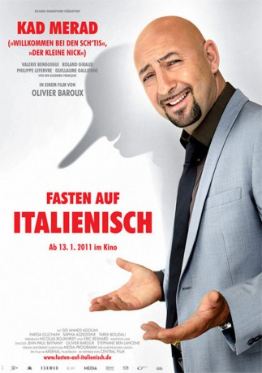

#4182 Fasten auf Italienisch
Alternativ: The Italian (Englischer Titel)
 
 IMDB-Wertung: 5.8 / 10
IMDB-Wertung: 5.8 / 10  Metascore: 0
Metascore: 0 
Dino Fabrizzi (Kad Merad) lebt glücklich in Nizza. Vor seinem teuren Strandhaus erstreckt sich die Cote d‘Azur, er ist mit seiner Traumfrau Hélène (Valérie Benguigui) zusammen und auch beruflich kann er nicht klagen: Die Beförderung zum Leiter eines schnieken Maserati-Autohauses ist in greifbarer Nähe. So weit, so gut, doch Dino Fabrizzi trägt seit Jahren ein Geheimnis mit sich herum: In Wirklichkeit heißt er Mourad Ben Saoud, stammt aus Algerien und hat in seinem ganzen Leben noch nie einen Fuß auf italienischen Boden gesetzt. Selbst seine Familie weiß davon nichts. Ihnen gaukelt Dino vor, in Rom Karriere zu machen. Als sein herzkranker Vater ihn am Krankenbett bittet, an seiner Stelle den Ramadan zu begehen, beginnt die Fassade des Hochstaplers zu bröckeln...
Jahr: 2010
Dauer: 102 Minuten
FSK:
Land: Frankreich Studio: Arsenal FilmverleihTonspuren: DTS - ,
Untertitel: Deutsch,
Auflösung: 1080p (1920x1040) Größe: 7208 MB
Genre: Drama, Komödie
Regisseur: Olivier Baroux
Drehbuch: Brad Falchuk
Soundtrack:
Darsteller:
 Kad Merad als Mourad Ben Saoud, alias Dino Fabrizzi
Kad Merad als Mourad Ben Saoud, alias Dino Fabrizzi Guillaume Gallienne als Jacques
Guillaume Gallienne als Jacques- Kamel Abdelli als Flic
- Valérie Benguigui als Hélène
- Roland Giraud als Charles
- Philippe Lefebvre als Cyril Landrin
- Sid Ahmed Agoumi als Mohamed Ben Saoud
- Farida Ouchani als Rachida Ben Saoud
- Saphia Azzeddine als Amel Ben Saoud
- Tarek Boudali als Karim
- Nathalie Levy-Lang als Nadège
- Karim Belkhadra als Abdel
- Alain Doutey als André
- Arielle Sémenoff als Marie-Paule
- Guy Lecluyse als M. Maizière
- Raphaële Germser als Geneviève
- Pascal Vincent als Bourgeaux
- Ahmed Saguia als Qatari 1
- Roda Fawaz als Qatari 2
- Khalid Maadour als Moktar
- Christophe Corsand als Docteur Martin
 Laurent Spielvogel als Le sommelier
Laurent Spielvogel als Le sommelier- Jean-Claude Dumas als Albert
- Jean-François Malet als Flic
- Nader Soufi als Lieutenant Toufik
- François Cottrelle als Patron
- Laurence Cormerais als Cliente
- Antoine Pappalardo als Chauffeur taxi
- Sami Chlagou als Barman
- David Walters als Homme guérite
Datei: X:\2010(A-F)\Fasten auf Italienisch (2010, FSK, 1920x1040).mkv seit 28.07.2016
Festplatte: HD 2009(G-Z)-2010(A-F)
 Es gibt insgesamt 95 Filme in der Gruppe '2010(A-F)'
Es gibt insgesamt 95 Filme in der Gruppe '2010(A-F)'